- HardwareDesigned the Meta-skin device structure and ran its performance testing.
- ElectronicsDesigned the PCB schematics for the sensing / stimulation controller.
- SoftwareCo-developed the bidirectional remote-interaction code.
- StudyDesigned and ran the affective-interaction experiments.
Calls carry voice and faces. Touch gets left behind.
Remote communication transmits sight and sound well, but not the press of a hand or the stroke of a finger. Haptic devices that try to fill the gap are mostly pneumatic or electromagnetic gloves: millimetres to centimetres thick, tens to hundreds of grams, and they cover the very skin they are meant to stimulate.
Meta-skin takes the opposite route. One skin-thin layer both senses touch and renders it, so the same patch works as the input and the output of a two-way haptic link.

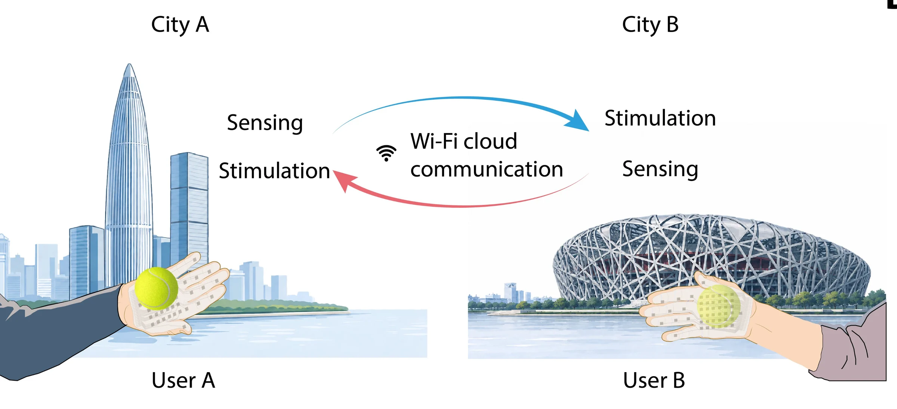

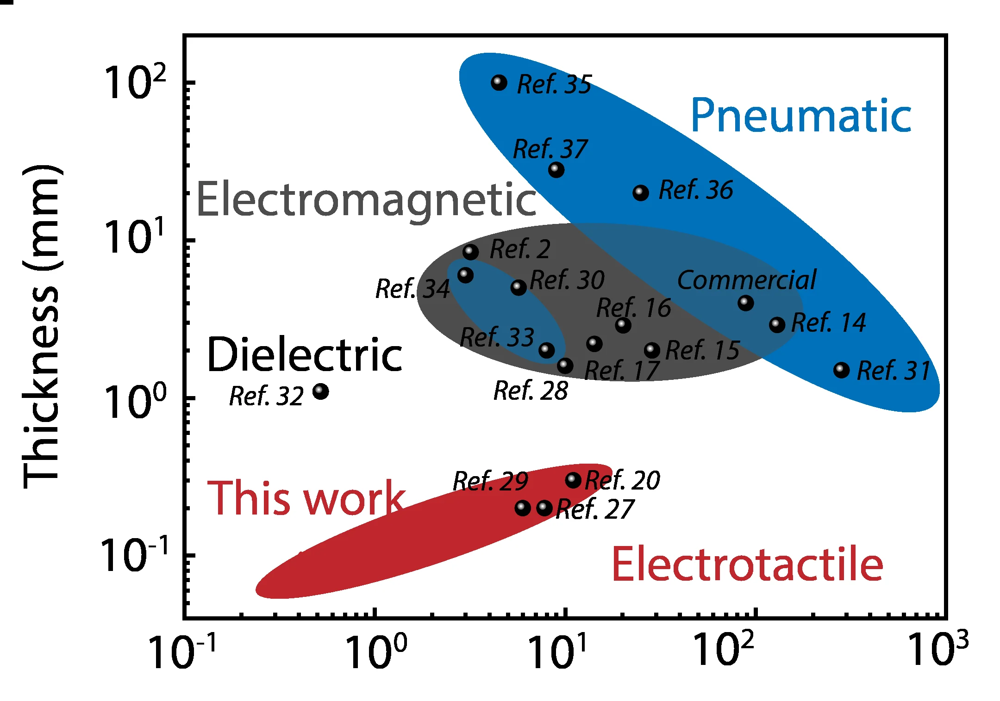

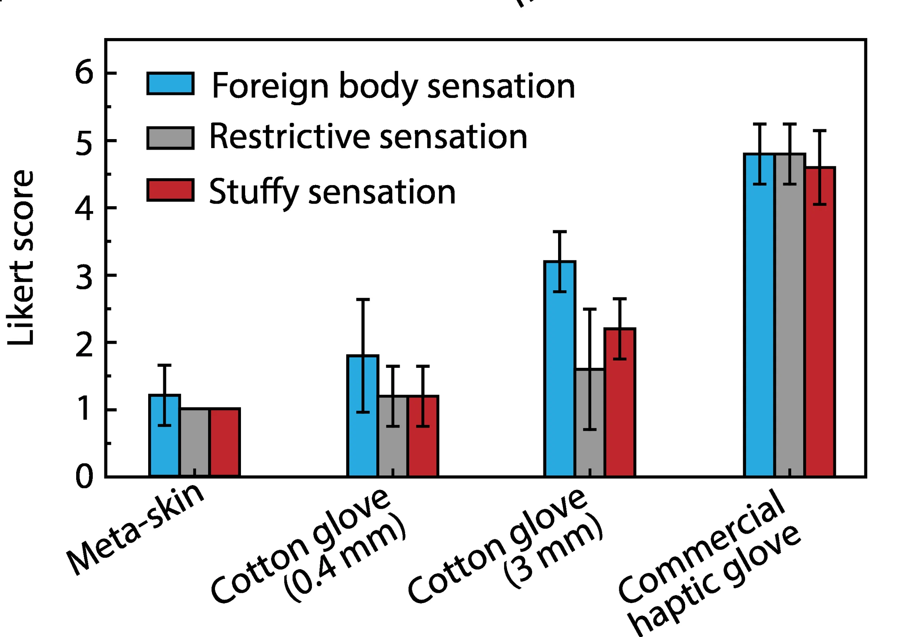
One electrode site, two jobs.
Every site on the Meta-skin stacks a micro-structured iontronic sensing electrode over a mesh-shaped stimulation electrode, carried on a breathable nanofiber membrane with printed silver threads.
Sensing uses the skin itself: pressing brings the sensing electrode into contact with the ions in the skin, forming an electric double layer whose capacitance rises with pressure. Stimulation sends a current pulse through the same skin interface to evoke touch.

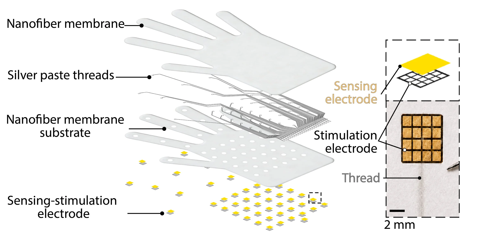

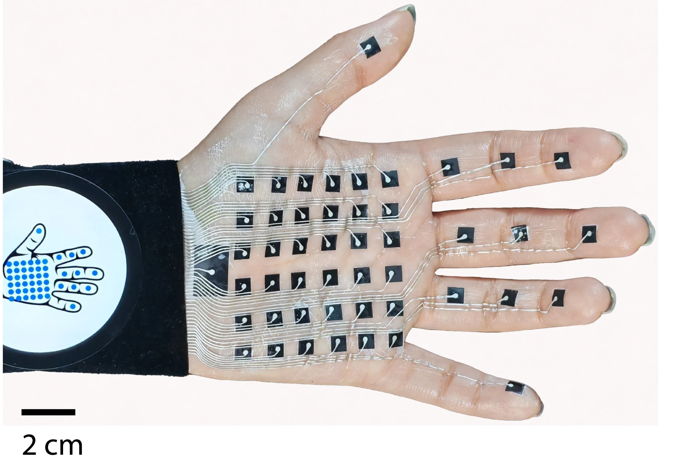

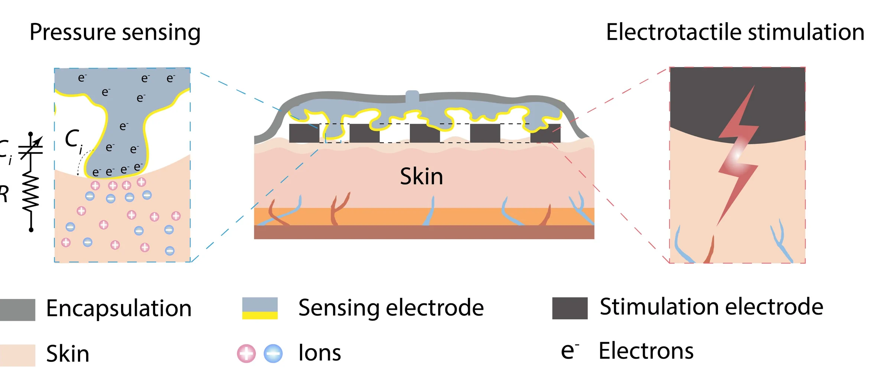
From a press on one hand to a pulse on another.
The skin is half the work. The other half is a wearable controller, firmware and a network link that read 47 channels, decide what each person should feel, and drive the partner's electrodes, in both directions at once. The path below follows one touch through it.
Bidirectional, and the two directions never collide
Each device is a sensor and an actuator at once. A press on User A's skin is read by the analog front end, encoded by the microcontroller as a channel index and a capacitance value, and sent over Wi-Fi. User B's controller turns that pair into a stimulation pulse on the same channel. The reverse path runs at the same time.
Sensing and stimulation share the same skin, so a stimulation pulse fired during a capacitance read would corrupt it. The firmware time-division multiplexes every frame: a 32 ms sensing window, then a 20 ms stimulation window, never overlapping. Only the channel index and capacitance value travel over the network, which keeps each message small.

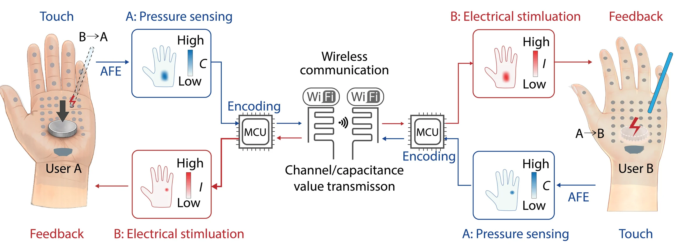

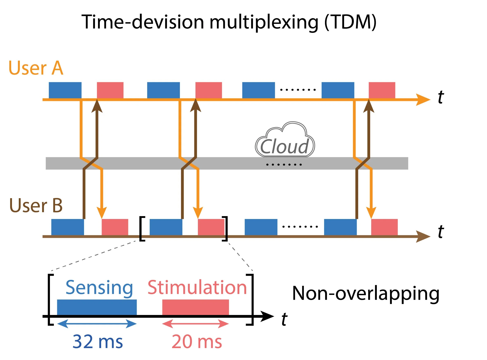
Wearable sensing / stimulation controller
A battery-powered wrist controller does three jobs: it scans 47 capacitive channels, it drives a stimulation pulse into any one of those same 47 electrodes, and it keeps a two-way network link with the partner's device. The work is split across two microcontrollers: MCU1 runs sensing and stimulation, and MCU2 runs the network link and the on-device screen.

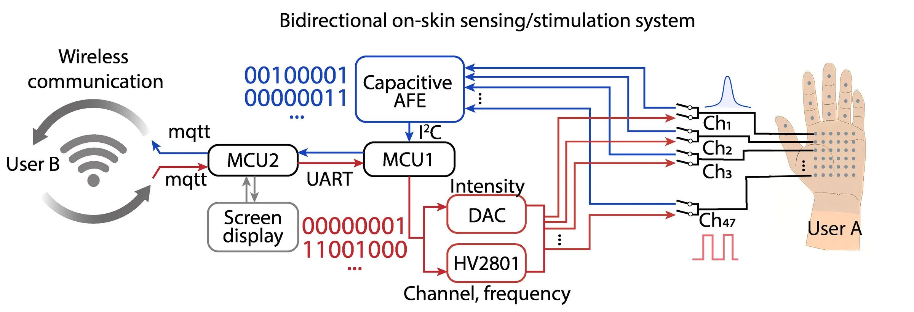

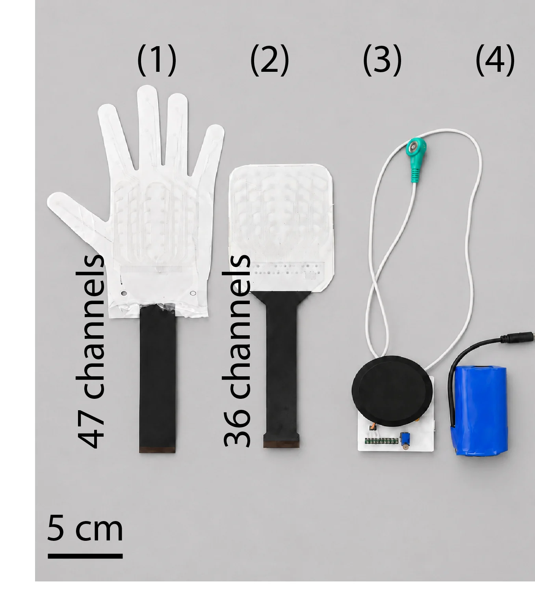
The same 47 electrodes sit on both lanes. A switch on each channel connects the electrode either to the AFE for reading or to the stimulation output. The DAC sets how strong the pulse is, the HV2801 sets which channel fires and at what frequency, and the firmware decides which lane owns the skin at each moment (step 01).
Calibrate once, then map every frame

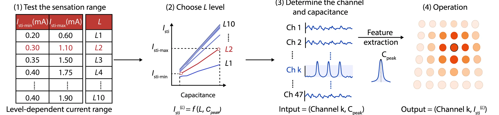
Try the mapping
Interactive illustrationOne press, traced through the whole system

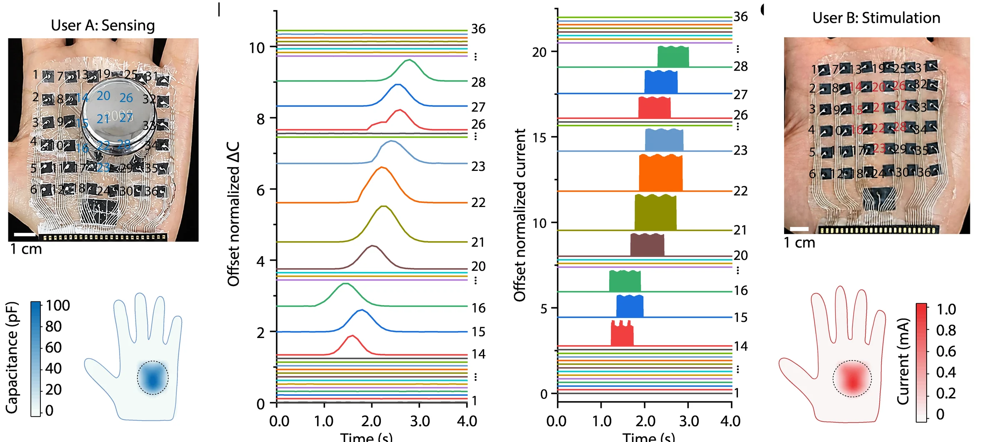
A weight moved across User A's palm raises capacitance on channels 14–28 in sequence.
The same channels on User B's palm receive current pulses in the same order and timing.
The colour maps under each photo show the reconstructed contact: what A presses is where B feels it.
Touch across 2,145 km.
Two users, one in Beijing and one in Shenzhen, each wore a Meta-skin and took turns touching and being touched over a live link. The clips below are cut from the supplementary movie; B→A means User B touches and User A feels it.

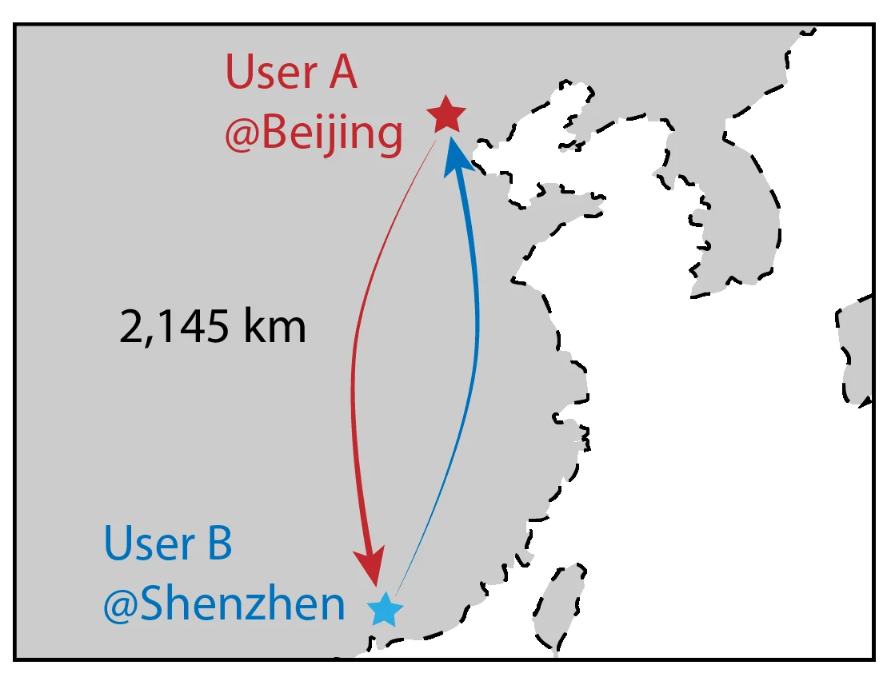

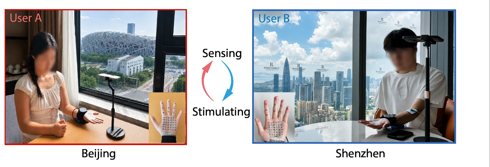
Where and how hard
Pressing a point B→A
Changing pressure B→A
Swapping roles A→B
What is being touched
Ring A→B
Rod B→A
Cross A→B

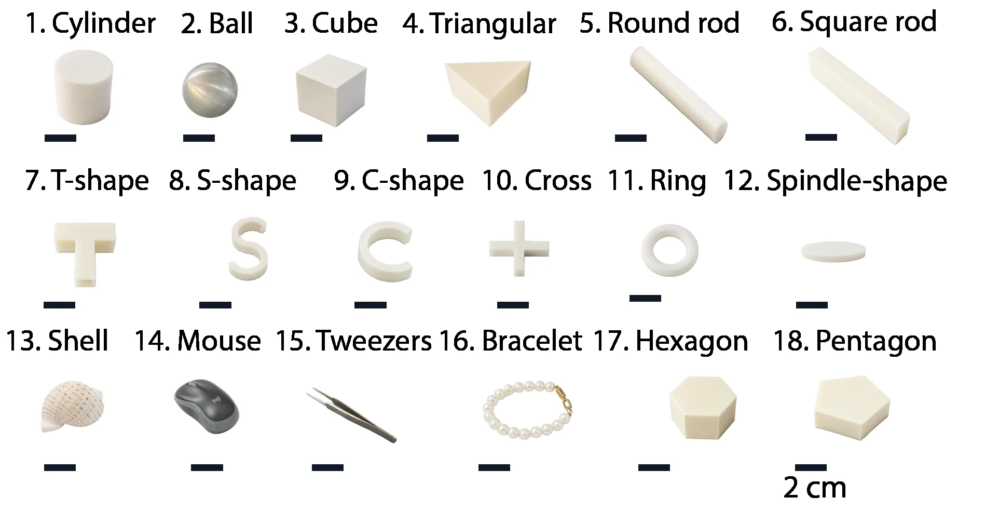
Recognition, both directions
The partner touches with an object on their own Meta-skin; the receiver identifies location, shape and weight from stimulation alone, in both the B→A and A→B directions.
How it feels: affective touch
Beyond location and shape, the affective study I designed and ran asks whether Meta-skin can carry feeling. Eight touch gestures are each paired with an emotional cue. Participants rated each one for pleasantness, tolerability, valence and arousal.

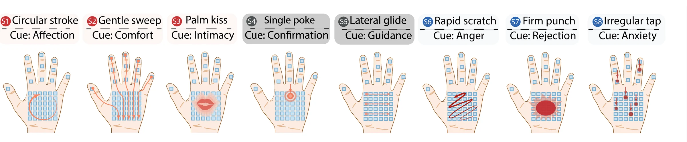

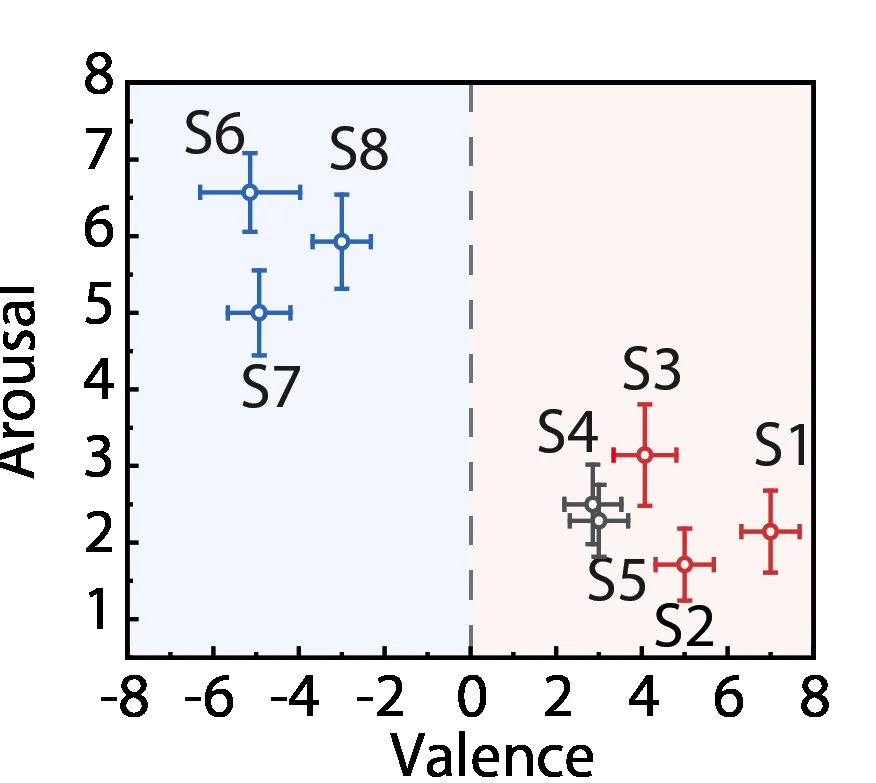

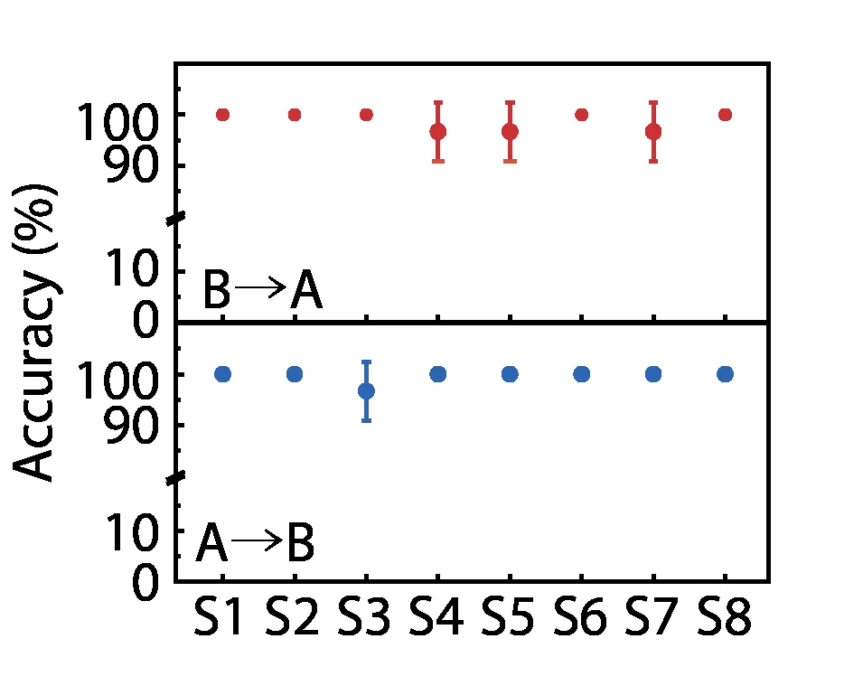
Meta-skin turns one skin-thin electrode array into both the sensor and the display for touch, and with a two-MCU wearable controller, time-multiplexed firmware and per-user calibration, lets two people 2,145 km apart press, trace shapes and share affective touch in real time.
BibTeX
@article{metaskin2026,
title = {Epidermal iontronic Meta-skins for remote haptic interaction},
author = {Ren, Meiying and Huang, Tao and Dong, Shuai and Fang, Wanyi and Fang, Shaochi and Jiang, Ping and Guo, Haoyu and Yao, Kuanming and Yu, Xinge and Guo, Chuan Fei},
note = {Under review},
year = {2026}
}